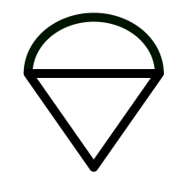

Программа определяет изменение высоты парашюта вдоль заданной траектории полета.
Траектория полета парашюта задается в форме ломаной линии на Яндекс.Карте. Щелчок по карте добавляет следующую вершину траектории. Вершина добавляется в начало или в конец траектории в зависимости от значения флажка "Строить траекторию в обратном порядке" в меню "Настройки" (кнопка )
Двойной щелчок по вершине траектории удаляет указанную вершину. Кнопка (очистить) удаляет траекторию.
Одинарный щелчок по вершине показывает/прячет высоту в данной вершине.
Одинарный щелчок на отрезке траектории добавляет вершину на этом отрезке.
Вершины можно перетаскивать по карте.
Ветер можно задавать на нескольких высотах. По умолчанию ветер на всех высотах одинаков и совпадает с поверхностным ветром.
Направление ветра задается с помощью конуса.
Двойной щелчок по карте добавляет новый конус (ветер на заданной высоте). Двойной щелчок по конусу удаляет указанный конус.
Если конусов больше одного, то в подсказке над конусом отображается высота, на которой дует соответствующий ветер.
Направление ветра для выделенного конуса можно менять в меню или кнопками клавиатуры влево/вправо. Силу ветра для выделенного конуса можно менять в меню или кнопками клавиатуры вверх/вниз. Перейти к следующему конусу можно с помощью кнопки Tab. Конусы можно перетаскивать по карте.
Начальная высота - высота в первой точке траектории. Конечная высота - высота в последней точке траектории. В меню "Настройки" (кнопка ) можно установить начальную высоту или конечную высоту, в зависимости от того, снят или установлен флажок "Строить траекторию в обратном порядке".
Аэродром можно выбрать двумя способами: в меню "Настройки" (кнопка ), или в строке поиска Яндекс.Карт.
В меню "Настройки парашюта" (кнопка ) можно установить вертикальную и горизонтальную скорость парашюта.
Предполагается, что парашютист летит вдоль траектории лицом вперед (это всегда так, если скорость парашюта выше скорости ветра)
Данная программа может быть использована только для предварительного анализа. Перед прыжками в незнакомом месте консультируйтесь с инструкторами.